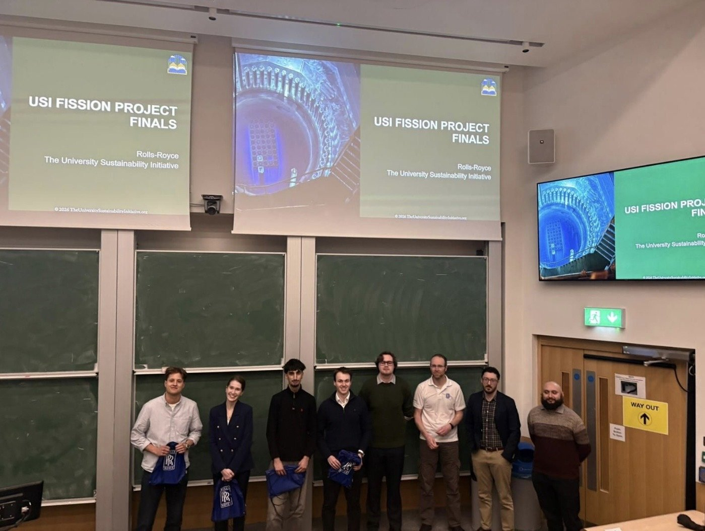
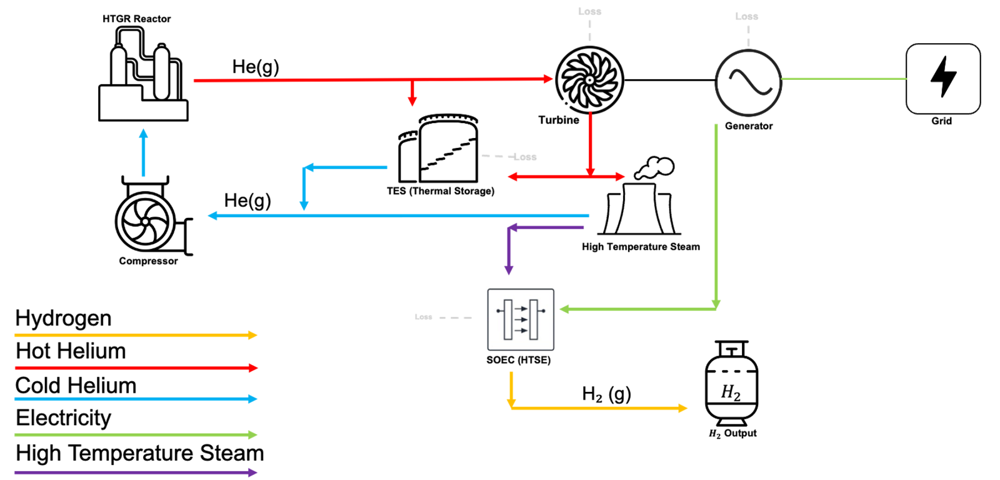
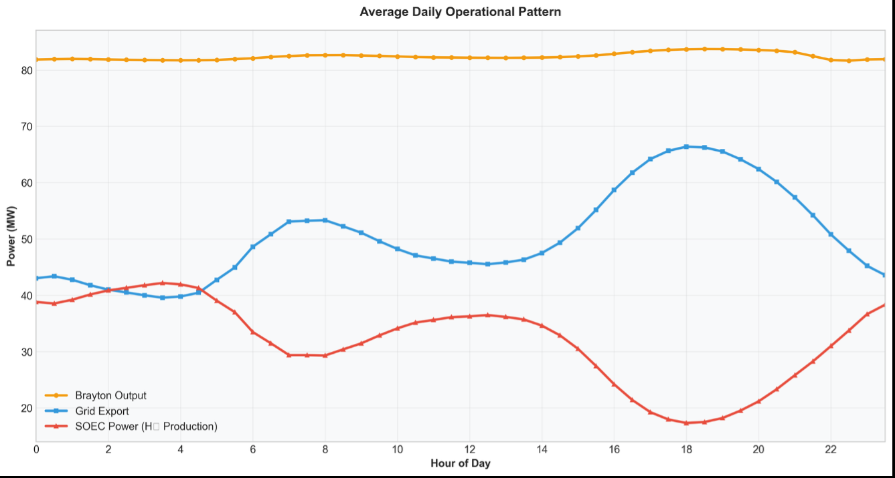
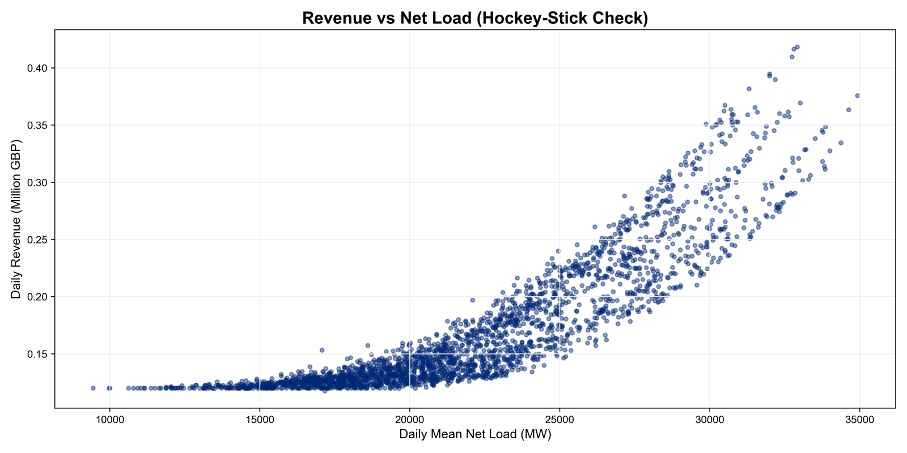
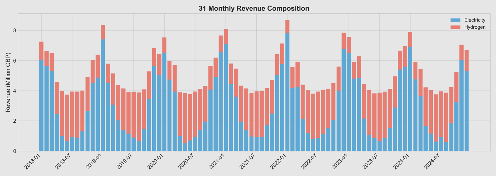
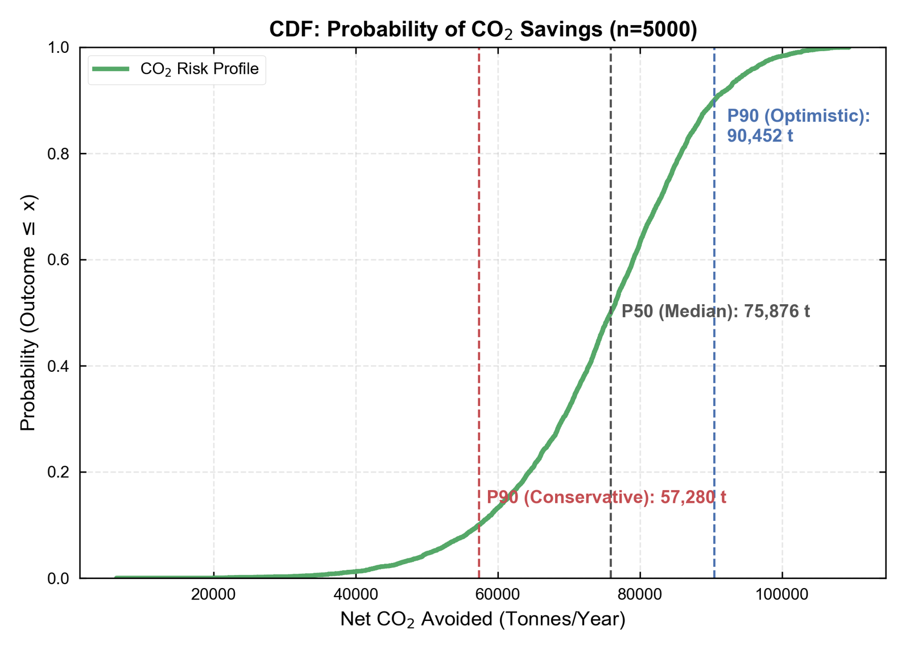

2026 · Case study
Rolls-Royce: High-Temperature Gas Reactor Design
Winning team of the Novel Nuclear Fission Project Finals, hosted by The University Sustainability Initiative with Rolls-Royce at Imperial College London.

The challenge: use nuclear fission to reduce CO2 emissions while reducing reliance on water cooling. More than 120 students from Oxford, Imperial, UCL and Cambridge competed through several stages.
Our four-person UCL team designed and modelled a 200 MWth high-temperature gas-cooled reactor (HTGR) with a cogeneration secondary system: a recuperated helium Brayton cycle, solid-oxide electrolysis for hydrogen, and thermal energy storage. The plant is dispatched every half hour against real NESO demand, wind, solar and grid carbon-intensity data, switching between grid export and hydrogen production depending on the system's scarcity.
My part as Systems Design Engineer was the system integration and the economic model: how the plant is dispatched against a grid driven by wind and solar, with the net load from NESO data as the scarcity signal, a scarcity price built on it, and the strike-price rule that decides each half hour between exporting electricity and producing hydrogen; plus the revenue model over seven years of data.
Highlights
- First place at the finals at Imperial College London, against teams from Oxford, Imperial, UCL and Cambridge.
- Time-resolved model of reactor, Brayton cycle (50.7 % thermal efficiency at the optimised pressure ratio), electrolyser and storage, with CO2 accounting built into the dispatch.
- Economic dispatch over 122,736 half-hour steps (2018 to 2024): net load from NESO data drives a scarcity price, and a hydrogen strike price decides between exporting electricity and making hydrogen.
- Monte Carlo analysis with 5,000 runs: median net CO2 avoidance of about 76,000 t per year (P10 57,000 t) and mean gross revenue of about 62 million GBP per year.




